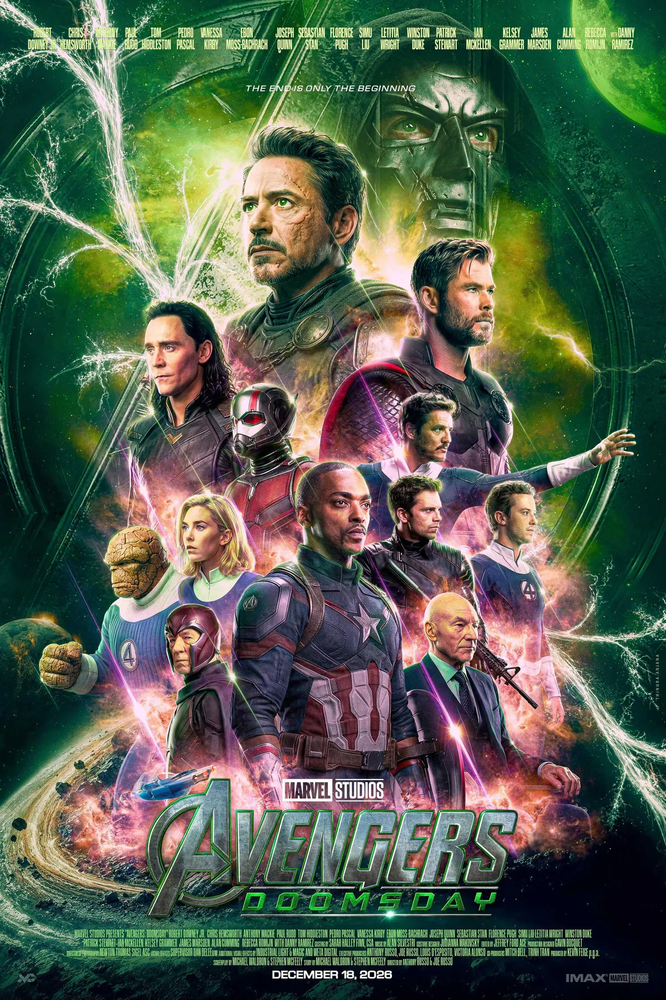
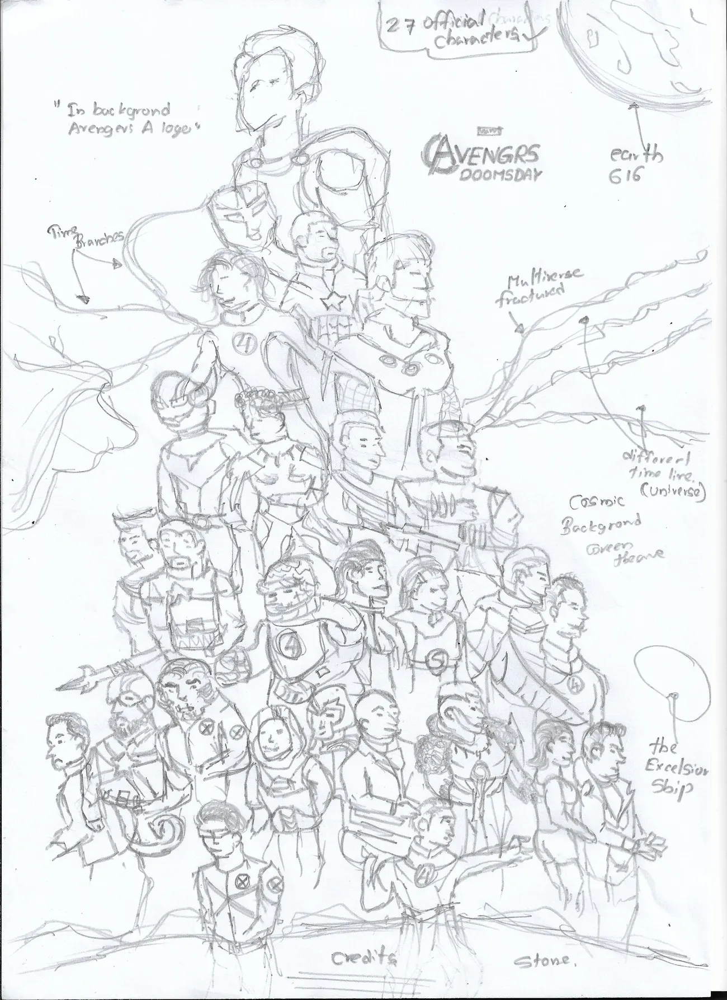
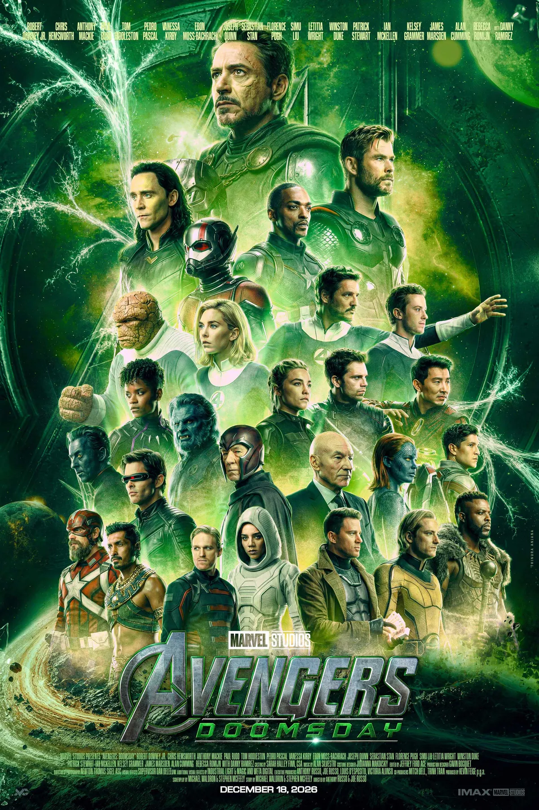

Avengers:
Doomsday.
Two versions, one lesson. A self-directed poster study that began as an overcrowded all-green composition and ended as a controlled, cinematic hierarchy.

From crowded scale to controlled clarity.
Three moves took the poster from ambition to something that finally read as Doomsday.
Sketch the ambition
An Avengers-level scale with a huge cast, energy fractures and a tall pyramid composition.
Find the failure
The all-green palette unified the image but flattened depth, and too many characters fought for weight.
Rebuild the threat
A smaller roster, a sharper Doom, and green, purple and warm light for stronger rhythm.

The first layout had too much weight.
It started as a 27-character layout. The intention was big and cinematic, but the hierarchy was wrong and the frame became overcrowded.
The colour plan collapsed too. The all-green palette buried the depth, and the character weight did not match the story's tone. So the design was scrapped, studied again, and rebuilt from zero.
Sometimes the first attempt fails only to show you the right direction.

The green version built the world.
Version one carries a strong, unified green identity. It set the original visual language: cosmic, ominous and Doom-centred.
The scale matched an Avengers-level threat, but the single-tone palette limited depth, and the cast pushed the layout close to saturation.
The rebuild made the frame breathe.
Instead of adding more, the final direction removes noise, balances colour temperature and gives each major character a clear role. This is the poster I saw in my head.
Dual Doom
Doom appears with and without the mask, a layered villain presence instead of one background face.
Balance
Purple and warm highlights break the green and guide the eye through the main cast.
Built softly
The FF vehicle, lens work, cracks and cosmic textures add scale while staying secondary.
Scale versus clarity.
Drag the handle to compare. Version one explores scale. Version two refines the same idea into a cleaner cinematic system.
What worked, what struggled
A strong green identity, an ominous cosmic mood and a Doom-centred direction. But one tone reduced depth, and the cast pushed toward saturation.
What improved
A smaller roster gave stronger hierarchy and cleaner silhouettes. Green, purple, warm highlights, dual Doom masks, the FF vehicle and a new logo structure gave it a studio finish.
More characters do not always mean more cinema. A strong frame needs hierarchy first: where to look, what to feel, and why each element exists.
Hierarchy first
Read the threat, the heroes and the support in a controlled order.
Colour needs depth
One colour creates identity; temperature and contrast create movement.
Remove noise
A smaller cast felt more premium, not less epic.
Build the world softly
Vehicles, fractures and textures support the story, never compete.